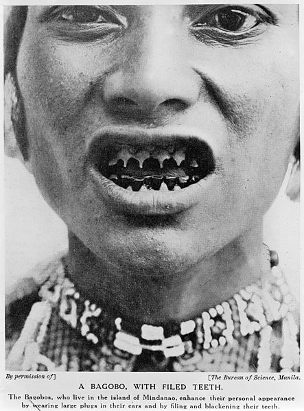

Intervenciones
Como vemos, las modificaciones del cuerpo, buscando cumplir estándares de belleza, han llegado en algunos casos a “modificaciones extremas”.
| Por ejemplo | ||
 |
||
| Bifurcación de lengua | Tatuaje ocular | Vendado de pies |
Estas prácticas “ocupan el escalón más alto” en lo que al arte de la modificación corporal refiere, al tiempo que comprenden algunas de las prácticas de mayor impacto cultural. Indudablemente, despiertan gran curiosidad y obligan a cualquiera a replantearse, entre otras cosas, cuáles son los conceptos que cada uno tiene acerca del cuerpo, la estética y la belleza.
| Por ejemplo | ||
|  | ||
| Limado de dientes | Body suit (tatuaje extensivo) | Deformación deliberada del cráneo |
Por ejemplo, en la cultura occidental, el piercing se ha vuelto una tendencia entre los adolescentes, aunque se popularizó en gran manera en la década de 1980. De todas formas, es una práctica que no escapa a culturas orientales, africanas, antiguas...
- Amputaciones,
- limado dental,
- implantes subdérmicos,
- implantes transdérmicos,
- implantes microdermales
- implantes extraoculares,
- castración,
- emasculación,
- bifurcación de lengua,
- vendado de pies,
- estiramiento de cuello,
- deformación craneal artificial,
- corseting,
- tatuaje,
- piercing,
- body suit.
- etcétera...
FUENTE:
Cultura Colectiva, "5 transformaciones corporales que sólo las personas más atrevidas se harán", s.l., s.f., disponible en internet: https://culturacolectiva.com/estilo-de-vida/transformaciones-corporales-solo-personas-atrevidas-haran Fecha de última visita: 2018.
FERNANDO PINO, "5 culturas con modificaciones corporales extremas", s.l., s.f., disponible en internet: https://www.vix.com/es/btg/bodyart/4404/5-culturas-con-modificaciones-corporales-extremas Fecha de última visita: 2018.
Obra publicada con Licencia Creative Commons Reconocimiento No comercial Sin obra derivada 4.0